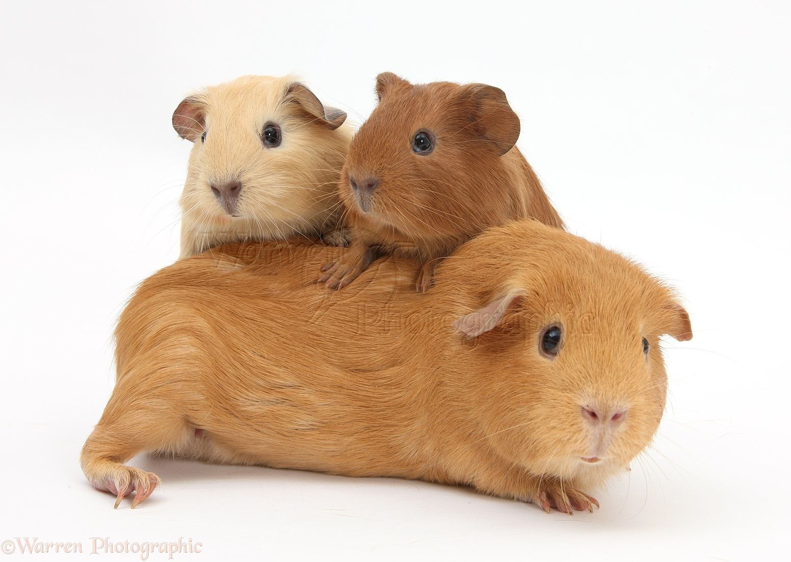
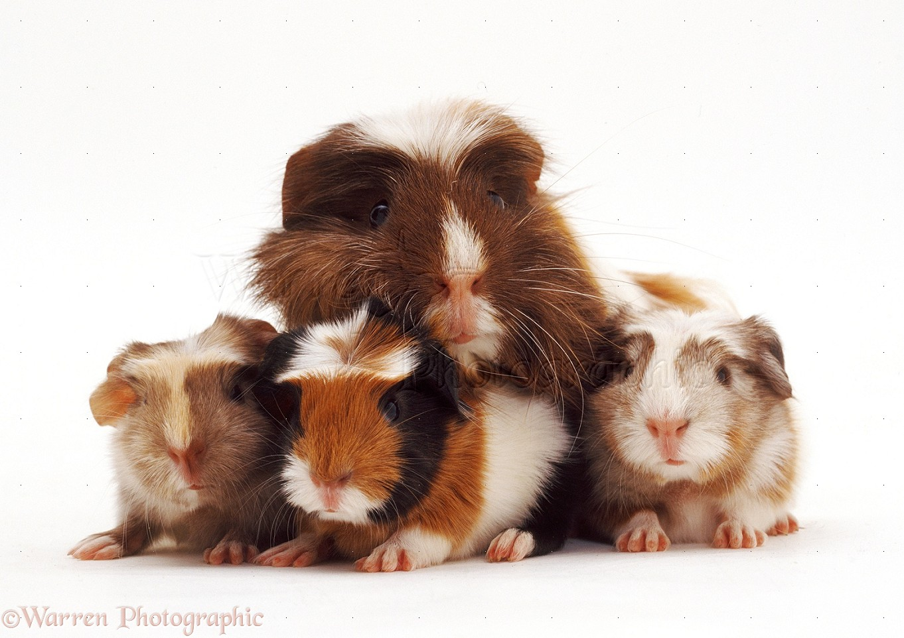
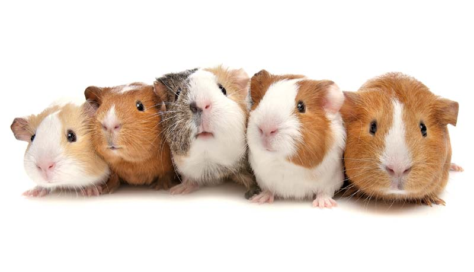

Guinea Pigs
|

|
|
Guinea pigs are the best animals ever!
|
Liuvi!They love grass!
Csokkolini!They are cute and fluffy!

The guinea pig or domestic guinea pig (Cavia porcellus), also known as cavy or domestic cavy, is a species of rodent belonging to the family Caviidae and the genus Cavia. Despite their common name, guinea pigs are not native to Guinea, nor are
they closely biologically related to pigs, and the origin of the name is still unclear. They originated in the Andes of South America, and studies based on biochemistry and hybridization suggest they are domesticated descendants of a closely
related species of cavy such as C. tschudii, and therefore do not exist naturally in the wild.[1][2] They were originally domesticated as livestock, as a source of food, and continue to be.
These are the types of food they may eat
Nutriant of guinea pig food
| food |
sugar |
salt |
| hay |
1g |
0g |
| grass |
3g |
1g |
| pellets |
5g |
2g |
|
| food |
Rating |
| hay |
⭐⭐⭐⭐⭐ |
| grass |
⭐⭐⭐⭐ |
| pellets |
⭐⭐⭐ |
|
If you want to learn about some guinea pig breeds, click here!

Bottom of the page